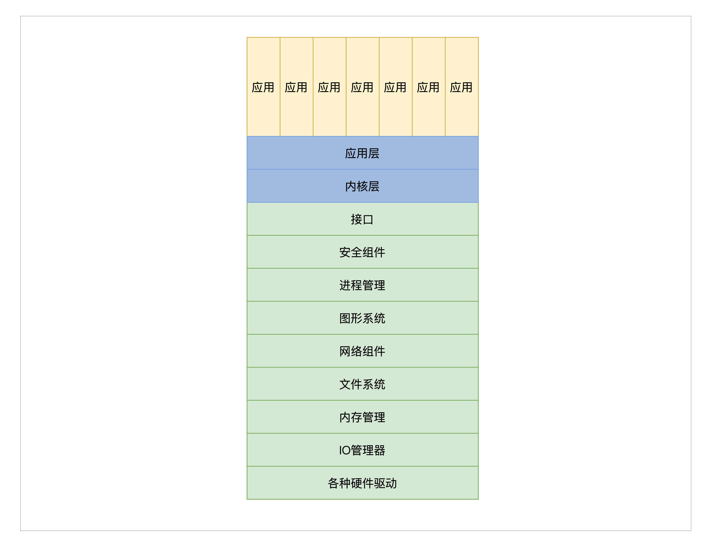
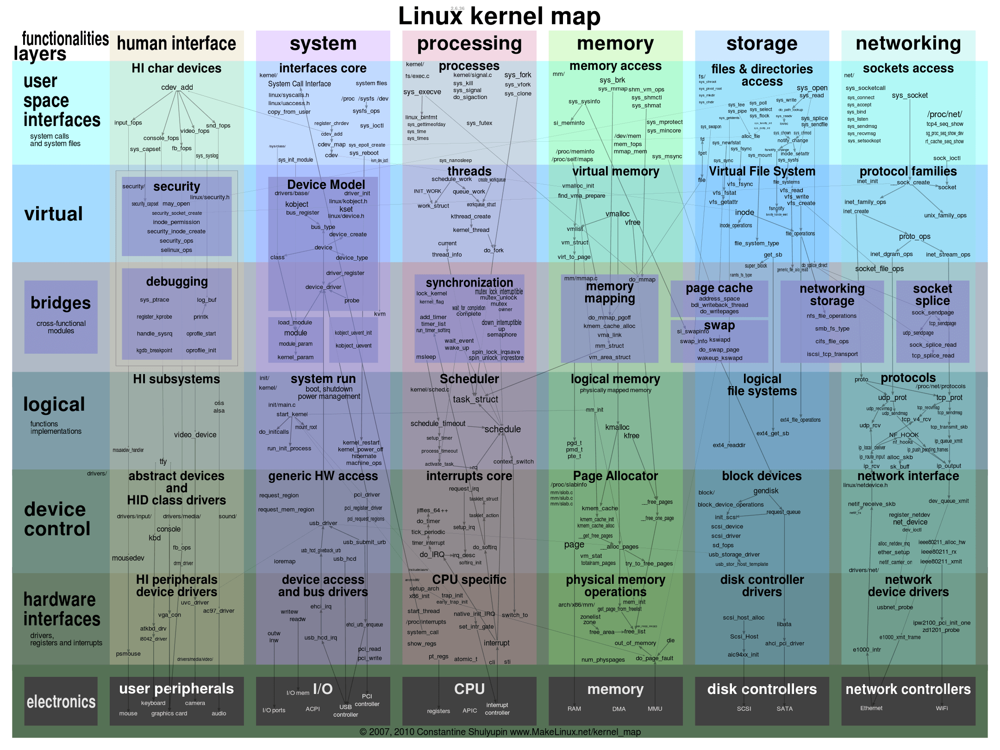
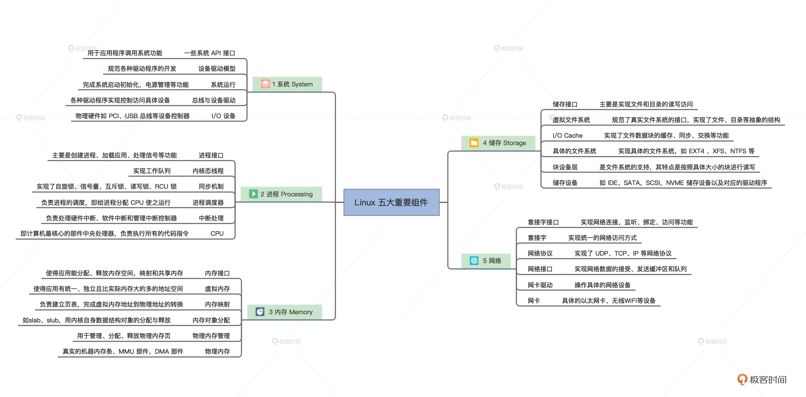

Introduction
[种草LINUX]linux系统架构介绍，Big Picture of LINUX_哔哩哔哩_bilibili
发行版
Linux发行版（Linux distribution）的主要区别包括以下几个方面：
-
包管理系统：不同的发行版可能采用不同的包管理系统，如Debian系的apt、Red Hat系的yum/dnf、Arch系的pacman等。这些包管理系统在软件安装、更新和卸载方面有着不同的命令和工作方式。
-
软件包选择和管理：不同的发行版可能会提供不同的软件包集合，有些发行版可能更倾向于提供稳定性和可靠性的软件包，而有些可能更注重提供最新的软件包。
-
发行版的目标受众：一些发行版专注于企业服务器市场，提供稳定性和长期支持，而另一些发行版则更适合桌面用户或者开发者。
-
默认配置和用户界面：不同的发行版可能会采用不同的默认配置和用户界面，以满足特定用户群体的需求。
-
社区和支持：每个发行版都有自己的社区和支持体系，有些发行版可能有更大的社区和更丰富的文档，而有些发行版可能更侧重于商业支持。
总的来说，Linux发行版的主要区别在于其包管理系统、软件选择和管理、目标受众、默认配置和用户界面以及社区和支持体系。选择适合自己需求的发行版是非常重要的。
LFS （Linux From Scratch）

依赖图
Linux内核架构
内部组成
Linux内核中的主要子系统，这些子系统负责管理各种功能和设备。
- 进程管理：
管理 CPU，由于 CPU 是执行程序的，而内核把运行时的程序抽象成进程，所以又称为进程管理。
- 进程调度
- 进程创建和销毁
-
进程间通信
-
内存管理：
管理内存，由于程序和数据都要占用内存，内存是非常宝贵的资源，所以内核要非常小心地分配、释放内存。
- 内存分配和释放
- 虚拟内存管理
-
页面置换算法
-
文件系统：
管理硬盘，而硬盘主要存放用户数据，而内核把用户数据抽象成文件，即管理文件，文件需要合理地组织，方便用户查找和读写，所以形成了文件系统。
- 文件读写
- 目录管理
-
文件系统支持（如ext4、NTFS等）
-
IO体系结构和设备驱动：
-
硬件设备的驱动程序
-
设备的初始化和操作
-
网络协议栈：
管理网卡，网卡主要完成网络通信，网络通信需要各种通信协议，最后在内核中就形成了网络协议栈，又称网络组件。
- TCP/IP协议栈
- 网络套接字
-
网络设备驱动
-
系统调用：
-
提供用户空间程序与内核之间的接口
-
定时器和中断处理：
-
硬件定时器管理
-
中断请求处理
-
安全性和权限：
-
访问控制
- 用户身份验证
-
安全策略
-
图形系统:
管理显卡，负责显示信息，而现在操作系统都是支持 GUI（图形用户接口）的，管理显卡自然而然地就成了内核中的图形系统。
关于宏内核和微内核
-
宏内核
宏即大也，这种最简单适用，也是最早的一种内核结构。
宏内核就是把以上诸如管理进程的代码、管理内存的代码、管理各种 I/O 设备的代码、文件系统的代码、图形系统代码以及其它功能模块的代码，把这些所有的代码经过编译，最后链接在一起，形成一个大的可执行程序。
这个大程序里有实现支持这些功能的所有代码，向用户应用软件提供一些接口，这些接口就是常说的系统 API 函数。而这个大程序会在处理器的特权模式下运行，这个模式通常被称为宏内核模式。结构如下图所示：

宏内核结构图尽管图中一层一层的，这并不是它们有层次关系，仅仅表示它们链接在一起。
我们来看一个例子理解内部具体原理，宏内核提供内存分配功能的服务过程：
- 应用程序调用内存分配的 API（应用程序接口）函数。
- 处理器切换到特权模式，开始运行内核代码。
- 内核里的内存管理代码按照特定的算法，分配一块内存。
- 把分配的内存块的首地址，返回给内存分配的 API 函数。
- 内存分配的 API 函数返回，处理器开始运行用户模式下的应用程序，应用程序就得到了一块内存的首地址，并且可以使用这块内存了。
上面这个过程和一个实际的操作系统中的运行过程，可能有差异，但大同小异。当然，系统 API 和应用程序之间可能还有库函数，也可能只是分配了一个虚拟地址空间，但是我们关注的只是这个过程。
上图的宏内核结构有明显的缺点，因为它没有模块化，没有扩展性、没有移植性，高度耦合在一起，一旦其中一个组件有漏洞，内核中所有的组件可能都会出问题。
开发一个新的功能也得重新编译、链接、安装内核。
其实现在这种原始的宏内核结构已经没有人用了。
这种宏内核唯一的优点是性能很好，因为在内核中，这些组件可以互相调用，性能极高。
-
微内核
微内核结构微内核架构正好与宏内核架构相反，它提倡内核功能尽可能少：
仅仅只有进程调度、处理中断、内存空间映射、进程间通信等功能。
这样的内核是不能完成什么实际功能的，开发者们把实际的进程管理、内存管理、设备管理、文件管理等服务功能，做成一个个服务进程。和用户应用进程一样，只是它们很特殊，宏内核提供的功能，在微内核架构里由这些服务进程专门负责完成。
微内核定义了一种良好的进程间通信的机制——消息。
应用程序要请求相关服务，就向微内核发送一条与此服务对应的消息，微内核再把这条消息转发给相关的服务进程，接着服务进程会完成相关的服务。服务进程的编程模型就是循环处理来自其它进程的消息，完成相关的服务功能。
其结构如下所示：

微内核提供内存分配功能的服务过程：
- 应用程序发送内存分配的消息，这个发送消息的函数是微内核提供的，相当于系统 API，微内核的 API（应用程序接口）相当少，极端情况下仅需要两个，一个接收消息的 API 和一个发送消息的 API。
- 处理器切换到特权模式，开始运行内核代码。
- 微内核代码让当前进程停止运行，并根据消息包中的数据，确定消息发送给谁，分配内存的消息当然是发送给内存管理服务进程。
- 内存管理服务进程收到消息，分配一块内存。
- 内存管理服务进程，也会通过消息的形式返回分配内存块的地址给内核，然后继续等待下一条消息。
- 微内核把包含内存块地址的消息返回给发送内存分配消息的应用程序。
- 处理器开始运行用户模式下的应用程序，应用程序就得到了一块内存的首地址，并且可以使用这块内存了。
微内核的架构实现虽然不同，但是大致过程和上面一样。同样是分配内存，在微内核下拐了几个弯，一来一去的消息带来了非常大的开销，当然各个服务进程的切换开销也不小。这样系统性能就大打折扣。
但是微内核有很多优点，首先，系统结构相当清晰利于协作开发。其次，系统有良好的移植性，微内核代码量非常少，就算重写整个内核也不是难事。
最后，微内核有相当好的伸缩性、扩展性，因为那些系统功能只是一个进程，可以随时拿掉一个服务进程以减少系统功能，或者增加几个服务进程以增强系统功能。
微内核的代表作有 MACH、MINIX、L4 系统，这些系统都是微内核，但是它们不是商业级的系统，商业级的系统不采用微内核主要还是因为性能差。
二者的主要区别
宏内核和微内核各个模块之间的通信方式
- 宏内核：直接使用函数调用和共享数据结构
- 微内核：inter-Process Communication (IPC)
- 消息传递(Message Passing)
- 共享内存(Shared Memory)
- 远程过程调用(Remote Procedure Calls (RPC))
- 事件队列(Event Queues)
实际案例学习
-
Linux


内存管理（memory）
进程管理（CPU） ---> 进程调度
系统 -->
存储（文件系统）（disk controllers）
网络子系统（network controllers）
-
Darwin (Mac OS / IOS)

-
Windows
 微软自己在 HAL 层上是定义了一个小内核，小内核之下是硬件抽象层 HAL，
微软自己在 HAL 层上是定义了一个小内核，小内核之下是硬件抽象层 HAL，这个 HAL 存在的好处是：不同的硬件平台只要提供对应的 HAL 就可以移植系统了。
小内核之上是各种内核组件，微软称之为内核执行体，它们完成进程、内存、配置、I/O 文件缓存、电源与即插即用、安全等相关的服务。
每个执行体互相独立，只对外提供相应的接口，其它执行体要通过内核模式可调用接口和其它执行体通信或者请求其完成相应的功能服务。
所有的设备驱动和文件系统都由 I/O 管理器统一管理，驱动程序可以堆叠形成 I/O 驱动栈，功能请求被封装成 I/O 包，在栈中一层层流动处理。Windows 引以为傲的图形子系统也在内核中。
关于Linux内核的学习
在我有了操作系统的整体宏观图概念和一些常见的基础概念之后，再开始分专题学习内核各个子系统。
注意：仅为之前自身的学习路径，仅供参考。
内核是为进程(CPU)服务的， 读明白了内存寻址和内存管理，以“进程结构在内存中的存放以及cpu对这样结构的访问 ” 为 基本框架 来理解操作系统。
-
首先看内存管理部分
寻址、分页、分段分页、内存地址映射、物理页框的管理等，内存访问是一切的基础
-
进程（/内核/CPU）的地址空间管理
进程mm结构、vm_struct管理、内核内存分配的几个主要函数，slab，伙伴系统等
-
进程调度部分
内核同步，中断，信号，IPC，系统调用等其他内容，
-
文件系统部分
vfs和 页高速缓存， 文件，文件系统
-
IO设备
io 设备和sysfs驱动模型
剩余的什么图形和网络由自己的兴趣和以后工作的方向来。